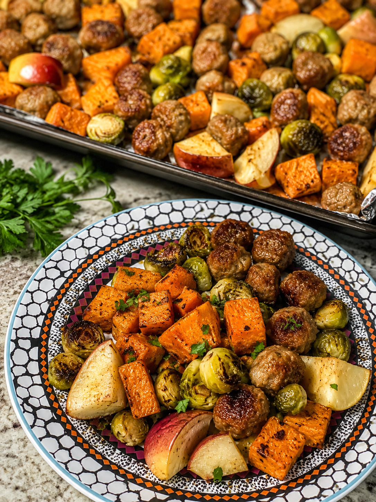

From the kitchen
Sausage, sweet potato, Brussels sprouts & apple sheet pan
A fall-flavored sheet pan finished with a Dijon-maple glaze

Why this one's in rotation
This is my slower-weekend recipe. Nothing about it is hard, but there's a lot of knife work upfront, sweet potato, Brussels sprouts, sausage, and apples all need to be cut before anything hits the oven, and I'm not fast with a knife. So this one gets saved for a long weekend or a day when I actually have time to stand at the counter instead of rushing. Once everything's cut, it's hands-off: two rounds in the oven and a quick glaze at the end. I served it over couscous, but rice works just as well if that's what you've got.
Why it works for runners
- Sweet potato and couscous (or rice) provide easy-to-digest carbs for glycogen replenishment
- Sausage brings protein and fat for satiety after a long training day
- Brussels sprouts add fiber, vitamin C, and vitamin K
- Apples add natural sweetness plus a dose of fiber and potassium
- The Dijon-maple glaze adds flavor and a little extra sodium, useful after a sweaty workout
Ingredients (3–4 servings)
- 1 sweet potato, cut into ¾-inch cubes
- 1 lb Brussels sprouts, halved
- 1 lb sausage (chicken, pork, or your favorite), sliced into thick coins
- 2 apples, cut into wedges or large chunks
- 2 tbsp olive oil
- 1 tsp garlic powder
- ½ tsp smoked paprika
- Salt and pepper, to taste
- Cooked couscous or rice, for serving
Dijon-maple glaze (optional but worth it)
- 1½ tbsp Dijon mustard
- 1 tbsp maple syrup or honey
- 1 tbsp olive oil
- 1 tsp apple cider vinegar (if you have it)
Instructions
- Heat the oven to 425°F.
- Cut the sweet potato into ¾-inch cubes, halve the Brussels sprouts, slice the sausage into thick coins, and cut the apples into wedges or chunks. Keep the apple pieces fairly large so they don't turn to mush in the oven.
- Toss the sweet potato and Brussels sprouts with the olive oil, garlic powder, smoked paprika, salt, and pepper. Spread everything on a sheet pan with some room between pieces, and place the Brussels sprouts cut-side down against the pan, they'll brown and crisp instead of just steaming.
- Roast for 15 minutes. Sweet potatoes need the head start.
- Add the sausage and apples to the pan, toss everything together, and return to the oven for another 18–22 minutes, until the sweet potatoes are tender, the Brussels sprouts have browned edges, the apples are caramelized, and the sausage is nicely browned.
- While the pan finishes, whisk together the Dijon, maple syrup, olive oil, and apple cider vinegar for the glaze.
- Drizzle the glaze over everything during the last 5 minutes of roasting, or toss it with the finished sheet pan straight out of the oven.
- Serve over couscous or rice.
Personal notes
- Save this one for when you have time. Between the sweet potato, Brussels sprouts, sausage, and apples, there's a lot of cutting, and I'm slow at it. This isn't a weeknight-after-work recipe for me, it's a long-weekend one.
- Two apples, one sweet potato. I had two of each on hand, so I leaned a little heavier on apples than sweet potato this time. Both ratios work; use what you've got.
- Couscous over rice. I served this over couscous since it was already in the pantry, but rice is an easy swap if that's what you have.
- Don't skip flipping the sprouts. Cut-side down against the pan makes a real difference, they get much darker and crispier instead of steaming in their own liquid.
Approximate nutrition (per serving, sausage + vegetables + glaze, not including couscous or rice)
- Calories: ~480
- Protein: 22g
- Carbohydrates: 38g
- Fat: 28g
Add roughly 150–200 calories and 30g of carbs per ¾ cup of cooked couscous or rice on top, more on a long-run or high-mileage day.
Meal-prep tip
This holds up well in the fridge for 3–4 days. Store the sheet pan mix separately from the couscous or rice so the grains don't turn mushy, and reheat the vegetables and sausage in a hot skillet or the oven rather than the microwave if you want the apples and Brussels sprouts to hold onto some of their caramelized edges.
Real talk: I can run a 5K faster than I can plate a bowl of food. My kitchen lighting is criminal, so these photos got a little AI glow-up before hitting the page. The recipe, the notes above, and the numbers are all real — I just haven't figured out how to get AI to shave time off my splits yet. Working on it.